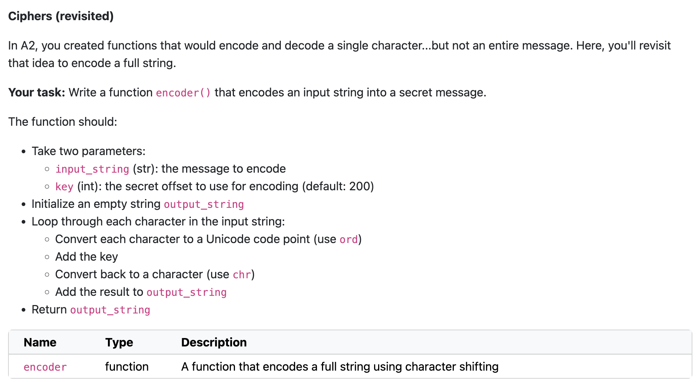

Methods#

Q&A
Q: Does range just make a list of numbers?
A: For simplest answer, yes. For a more nuanced answer, it’s not technically a list but a range object. This is NOT a nuance I will test you on. You can think of it as a list of numbers.
Q: When is a good time to use loops and do you add break just to stop the loop?
A: Any time you want code to run multiple times, a loop is the perfect solution! And, yup, break stops the loop. It can be helpful when debugging or when you want to stop a loop after you’ve found what you’re looking for and don’t need to look any longer.
Course Announcements
Due this week:
VQ10 due Wed
CL5 due Fri
Mid-course survey “due” (for extra credit) Friday - link also on Canvas assignment
Notes:
Oral Exam weeks 7-10 slots released on Thursday; will send Canvas announcement
A4 now available - we’re just starting this material; due next Sun
Exam Summary
Well done, overall!
Median: 86%
Perfect scores: 17 students (3%)!
You will be able to view your exams in PL (end-of-week)…however, due to the wifi issues, students are still taking the exam
if you want to see them sooner/discuss struggles, ask a staff member in office hours :)
Methods#
First: review recent uncertainties & debugging
string, list, & dictionary
in place vs not in place
relationship to functions
objects
attributes
methods
…and try/except
Oral Exam: Collections#
Given the code below, take a minute to determine how the code is working and then describe what the function accomplishes overall and the logic within the code…You can assume encoder is a function that has been previously defined that takes in a single character and returns a different character
def custom_encoder(char, key=200):
custom_encodings = {
'a' : 'r',
'e' : 'p',
'i' : 'm',
'o' : 'n',
'u' : 's'
}
if char in custom_encodings:
output_char = custom_encodings[char]
else:
output_char = encoder(char=char, key=key)
return output_char
If you struggled on the back-up oral exam question last week, a very similar question was discussed in Q1 of E1-Review (Thurs of week 4; 4/24)
Debugging#
Let’s say you were working on this lab question last week and you were confused…how do you go about doing this and debugging?

First: the goal#
First, you need to understand what the goal of the function is…
Take a string as input
Convert all the characters in the string to some other character using ord() and this
keyReturn that new string from the function
Second: expectations#
Second, I would want to figure out some possible inputs and expected outputs…given my understanding.
Let’s consider the string ‘hi’, with the default key of 200:
ord('h') + 200
304
chr(304)
'İ'
ord('i') + 200
305
chr(305)
'ı'
so…with an input and the default key, ‘hi’ I’d expect the output ‘İı’
…but what about a nondefault key of say 300…
chr(ord('h') + 300)
'Ɣ'
chr(ord('i') + 300)
'ƕ'
so with an input of ‘hi’ and a key of 300, I’d expect an output ‘Ɣƕ’
Third: write some code#
Two approaches:
parts -> whole
all at once -> debug
Option A: Get parts of it working at a time…using print() statements to check understanding
# loop through a string
def encoder(input_string):
for ltr in input_string:
print(ltr)
encoder('hi')
h
i
# for each letter, get the "new" character
def encoder(input_string):
for ltr in input_string:
print(chr(ord(ltr) + 200))
encoder('hi')
İ
ı
# add each new letter to a growing string - return that string
def encoder(input_string, key=200):
output_string = ''
for ltr in input_string:
output_string = output_string + chr(ord(ltr) + key)
return output_string
encoder('hi')
'İı'
# work for other keys?
encoder('hi', 300)
'Ɣƕ'
# using this to test
encoder('hi')
Option B: Try to write it all at once…and then debug
# THIS HAS ERRORS WE'RE GOING TO DEBUG
def encoder(input_string, key=200):
for char in input_string:
output_string = chr(ord(char) + 200)
return output_string
encoder('hi')
'ı'
# we'll debug here so you can see the "original"
def encoder(input_string, key=200):
output_string = ''
for char in input_string:
output_string = output_string + chr(ord(char) + key)
return output_string
# using this to test
encoder('hi', 300)
'Ɣƕ'
Methods#
Method Examples#
A method is a function applied directly to the object you call it on.
General form of a method:
object.method()
In other words: methods “belong to” an object.
The method append() is called directly on the list my_list
# The `append` method, defined on lists
my_list = [1, 2, 3]
my_list.append(4)
print(my_list)
[1, 2, 3, 4]
# append is a method for lists
# this will error with a string
my_string = 'cogs18'
my_string.append('!')
---------------------------------------------------------------------------
AttributeError Traceback (most recent call last)
Cell In[45], line 4
1 # append is a method for lists
2 # this will error with a string
3 my_string = 'cogs18'
----> 4 my_string.append('!')
AttributeError: 'str' object has no attribute 'append'
Available methods:#
-
.lower(),.upper(),.capitalize(), etc.
-
.append(),sort(),reverse(), etc.
-
.keys(),.values(),.items(), etc.
Methods: In Place vs Not In Place#
List methods that are in place#
# Reverse a list
my_list = ['a', 'b', 'c']
my_list.reverse()
print(my_list)
['c', 'b', 'a']
# Sort a list
my_numbers = [13, 3, -1]
my_numbers.sort()
print(my_numbers)
[-1, 3, 13]
Dictionary methods that are not in place#
car = {'make': 'Hyundai',
'model': 'Santa Fe',
'year': 2009}
# Return the keys in the dictionary
out = car.keys()
out
dict_keys(['make', 'model', 'year'])
# car has not changed
car
{'make': 'Hyundai', 'model': 'Santa Fe', 'year': 2009}
# Return the values in the dicionary
car.values()
dict_values(['Hyundai', 'Santa Fe', 2009])
# string methods operate NOT in place
my_string = 'hello'
new_string = my_string.upper()
new_string
'HELLO'
Correspondance Between Functions & Methods#
All methods are functions. Methods are special functions attached to a variable type. All functions are NOT methods.
Note that:
my_variable.function_call()
acts like:
function_call(my_variable)
A function that we can call directly on a variable (a method) acts like a shortcut for passing that variable into a function.
Activity: Methods#
Please complete the two questions here: https://forms.gle/oeH6B6fSpvj6jNHk7. For these, best to read the code and think before trying the code out and getting the answer.
You are encouraged to:
talk to one another!
ask each other questions
ask us questions
.items(): Using dictionary methods…to loop#
car
{'make': 'Hyundai', 'model': 'Santa Fe', 'year': 2009}
for key, val in car.items():
print('Loop Iteration:')
print(key)
print(val)
Loop Iteration:
make
Hyundai
Loop Iteration:
model
Santa Fe
Loop Iteration:
year
2009
Activity: .items()#
Include your code for this question in this form: https://forms.gle/EmZwrUBVD6KkVHQd9
Can you re-write this function (accomplishing the same task!) using
.items():
def passing_students(scores_dict, passing_score):
passed_students = []
for student in scores_dict:
if scores_dict[student] >= passing_score:
passed_students.append(student)
return passed_students
Notes:
We initially drafted some of this code in the Loops notes.
Including
studentsbelow so you don’t have to type out a dictionary with students’ names and scores
students = {
'Alondra': 85,
'Holly': 58,
'Brooke': 92,
'Pauline': 47,
'Minqi': 76
}
# CODE
def passing_students(scores_dict, passing_score):
passed_students = []
for key, val in scores_dict.items():
if val >= passing_score:
passed_students.append(key)
return passed_students
# TRY IT OUT
passing_students(students, 70)
['Alondra', 'Brooke', 'Minqi']
try/except#
What if you want Python to try to run some code…but do something else if it encounters an exception?
Note: input() allows you to get input from a user.
def get_an_input_integer():
in_string = input('Enter your favorite whole number:\n')
try:
in_integer = int(in_string)
except:
in_integer = None
return in_integer
get_an_input_integer()
What would this look like without a try/except?
def get_an_input_integer_wo():
in_string = input('Enter your favorite whole number:\n')
in_integer = int(in_string)
return in_integer
get_an_input_integer_wo()
---------------------------------------------------------------------------
ValueError Traceback (most recent call last)
Cell In[72], line 1
----> 1 get_an_input_integer_wo()
Cell In[70], line 3, in get_an_input_integer_wo()
1 def get_an_input_integer_wo():
2 in_string = input('Enter your favorite whole number:\n')
----> 3 in_integer = int(in_string)
4 return in_integer
ValueError: invalid literal for int() with base 10: 'Shannon'
Where are we going?#
class - creating our own object types!
attributes
methods <- we know what these are now!
So let’s talk about attributes…
Objects#
from datetime import date
my_date = date(year=1988, month=9, day=29)
print(my_date)
1988-09-29
type(my_date)
datetime.date
Attributes#
Attributes look up & return information about the object.
attributes maintain the object’s state, simply returning information about the object to you
my_date.day
29
Methods#
These are functions that belong to and operate on the object directly.
methods modify the object’s state
# Method to return what day of the week the date is
my_date.weekday()
3
my_date.weekday?
Docstring:
Return the day of the week represented by the date.
Monday == 0 ... Sunday == 6
Type: builtin_function_or_method
Activity: Methods#
Complete the Google Form questions here: https://forms.gle/JLzC4cgFmhs2Z8h27
Feel free to chat with and ask questions of your neighbors!
Objects Summary#
Objects allow for data (attributes) and functions (methods) to be organized together
methods operate on the object type (modify state)
attributes store and return information (data) about the object (maintain state)
dir()returns methods & attributes for an objectSyntax:
obj.method()obj.attribute
dateanddatetimeare two types of objects in Python